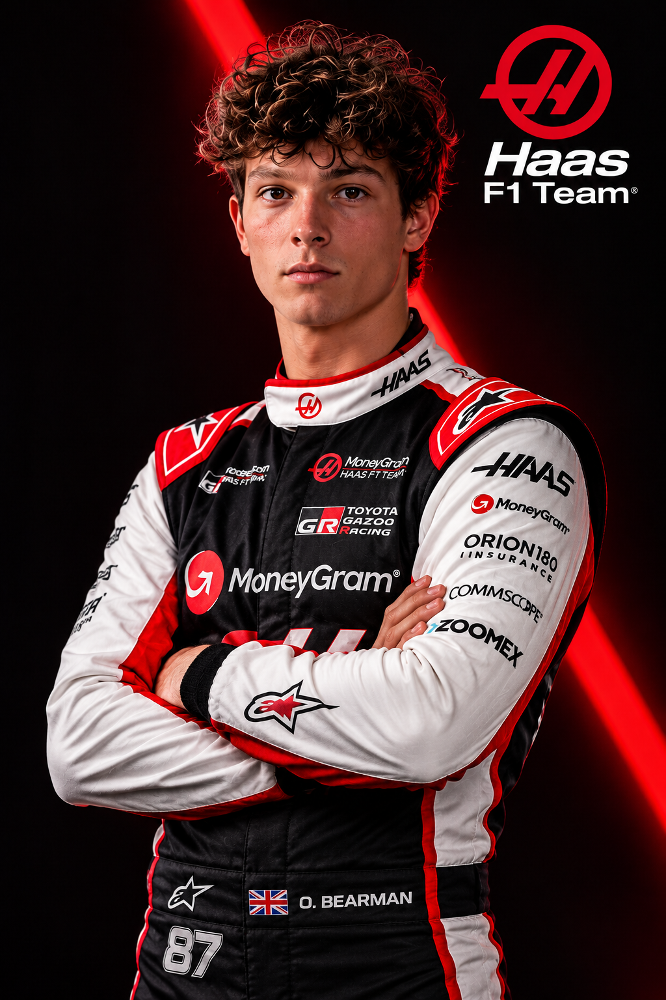

OLIVER
BEARMAN
Haas · N° 87 · Royaume-Uni
Découvrez Oliver Bearman, jeune pilote britannique de Formule 1, révélé lors de ses débuts avec Ferrari avant de rejoindre Haas F1 Team.
Présentation du pilote
Informations personnelles et carrière.

Portrait généré par intelligence artificielle — illustration non officielle.
Biographie & parcours
Né le 8 mai 2005 à Chelmsford, en Angleterre, Oliver Bearman est un pilote automobile britannique évoluant en Formule 1.
Surnommé Ollie, il commence le karting dès l'âge de huit ans et progresse rapidement dans les compétitions.
En 2020, il fait ses débuts en monoplace dans les championnats italien et allemand de Formule 4.
L'année suivante, il remporte les deux championnats de Formule 4, confirmant son talent et sa rapidité.
Il rejoint ensuite la Ferrari Driver Academy, le programme de formation des jeunes pilotes de la Scuderia Ferrari.
En 2022, il dispute le championnat FIA de Formule 3 avec PREMA Racing. Il termine troisième du championnat.
En 2023, il passe en Formule 2, toujours avec PREMA Racing, et remporte plusieurs courses.
Il participe également à des séances d'essais libres en Formule 1 avec Haas, notamment au Mexique et à Abou Dhabi.
En mars 2024, une opportunité inattendue bouleverse sa carrière.
Carlos Sainz doit déclarer forfait au Grand Prix d'Arabie saoudite en raison d'une appendicite.
Ferrari choisit Oliver Bearman pour le remplacer au volant de sa monoplace.
À seulement 18 ans, il dispute son premier Grand Prix de Formule 1 à Djeddah et termine septième, inscrivant immédiatement ses premiers points.
Il devient ainsi le plus jeune pilote à prendre le départ d'un Grand Prix pour Ferrari.
Durant la saison 2024, il effectue également des remplacements chez Haas.
Ses performances lui permettent d'obtenir un contrat de titulaire chez Haas pour la saison 2025.
Il réalise notamment une quatrième place au Grand Prix de Mexico 2025, son meilleur résultat de cette saison.
En 2026, Oliver Bearman poursuit son développement en Formule 1, avec l'ambition de progresser vers les premières places.
Statistiques de carrière
Palmarès et performances marquantes.
Ces statistiques présentent des résultats historiques. Les points et classements de 2026 évoluent pendant la saison.
Sources : Formula 1 et Haas F1 Team .
Son parcours
Saison 2026
Oliver Bearman dispute sa deuxième saison complète de Formule 1 avec Haas F1 Team en 2026.
Le pilote britannique poursuit son apprentissage dans une équipe motorisée par Ferrari.
Son objectif est de transformer sa vitesse et son expérience en résultats réguliers.
Ses fonds d'écran FBA
Trois créations consacrées à Oliver Bearman : Portrait, Racing et Célébration. Aperçus avec filigrane FBA.
Tarifs FBA Wallpapers
À l'unité
Toutes collections confondues
Toutes collections confondues
Boutique de démonstration. Aucun paiement ni téléchargement HD n'est actuellement disponible.